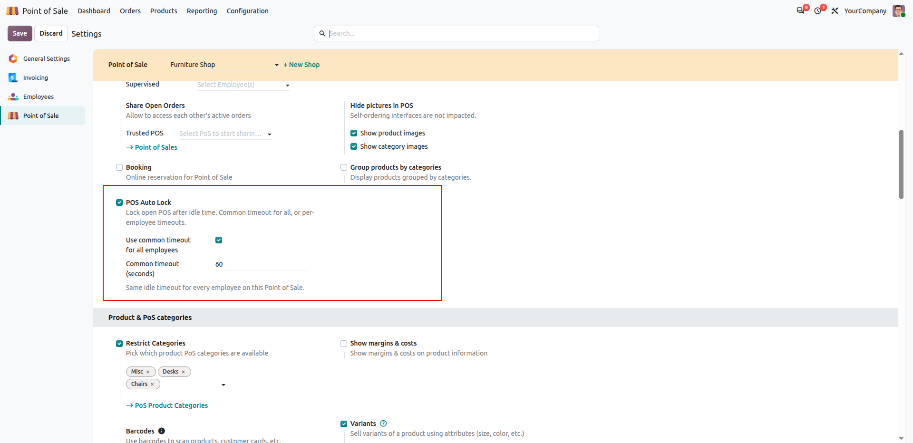
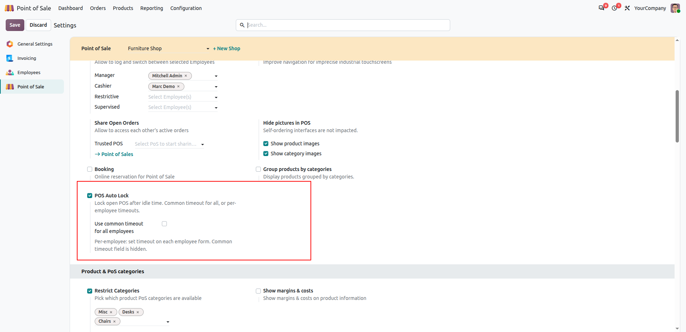
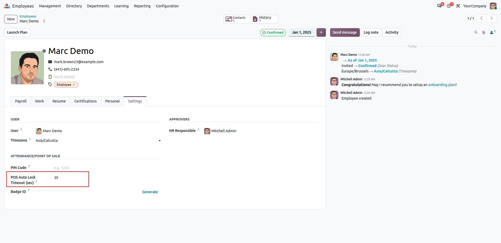

POS Auto Lock
Choose common timeout for all employees or separate timeout per employee. Unlock with employee PIN.
Odoo 20
Common / Separate switch
Employee PIN
pos_hr
Watch Demo Video
Overview
POS Auto Lock locks an open register after idle time. The session stays open; only the UI is locked.
Unlock uses the standard employee PIN or badge (pos_hr).
A configuration boolean controls the mode:
- Use common timeout = ON → one timeout for every employee; the common timeout field is shown and applied to all.
- Use common timeout = OFF → each employee uses their own timeout; the common timeout field is hidden.
Key Features
Boolean: common vs separate
Enable “Use common timeout for all employees” to force one timeout. Disable it to use per-employee values.
Common timeout field
Visible only when common mode is ON. Same idle seconds for every cashier on this POS.
Per-employee timeout
On the employee form when common mode is OFF. 0 = fallback to the stored common seconds.
PIN unlock
Native Login Screen + employee PIN / badge. Session is not closed.
Timeout rules
| Configuration | Effective timeout |
|---|
| Common mode ON |
Always pos.config common timeout (seconds). Employee values are ignored. |
| Common mode OFF + employee timeout > 0 |
That employee’s timeout. |
| Common mode OFF + employee timeout = 0 |
Fallback to the POS common timeout value (field may be hidden in UI). |
| POS Auto Lock disabled |
No auto-lock (manual lock still available when employees login is on). |
Screenshots
1. Common mode ON — common timeout visible

Enable POS Auto Lock, turn ON Use common timeout for all employees,
set Common timeout (seconds). Every employee uses this value.
2. Common mode OFF — common field hidden

Turn OFF Use common timeout for all employees. The common timeout field is hidden.
Timeouts are taken from each employee form.
3. Employee-specific timeout

Employees → employee form → Settings → Attendance/Point of Sale →
POS Auto Lock Timeout (sec). Used when common mode is OFF. 0 = fallback common value.
Configuration steps
- Install
my_pos_lock and enable Log in with Employees on the POS. Set employee PIN codes.
- Enable POS Auto Lock on the POS config or Settings → PoS Interface.
-
Choose mode:
- Common: enable “Use common timeout for all employees” and set the timeout seconds.
- Separate: disable that boolean; set POS Auto Lock Timeout on each employee.
- Open the POS, log in as an employee, leave the terminal idle — the register locks after the effective timeout.
Requirement: Auto-lock runs only when Log in with Employees is enabled,
so unlock is always tied to an employee PIN or badge.
Technical
- Technical name:
my_pos_lock
- Version: 20.0.1.0.0
- Depends:
point_of_sale, pos_hr, hr
- License: LGPL-3